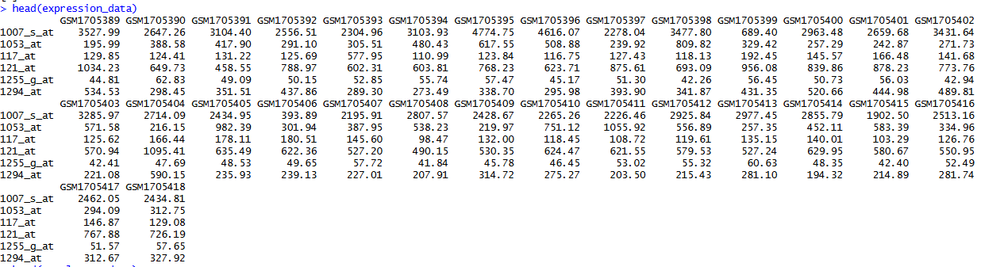
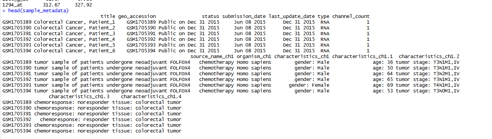
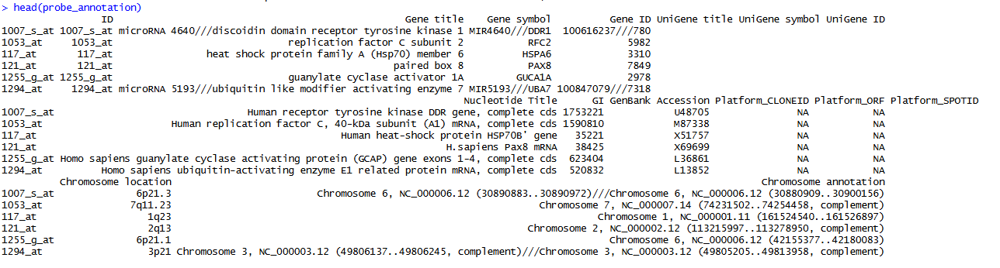

이번 단계의 분석 흐름
- 30개 sample의 Series Matrix를 내려받고 ExpressionSet 구조를 이해합니다.
pData()를 직접 확인하고 분석에 사용할chemoresponse:ch1열을 선택합니다.- 발현값의 범위를 확인한 뒤 필요한 경우 log2 변환합니다.
- Probe ID를 gene symbol로 변환하고 중복 symbol은
aggregate()로 평균을 계산합니다. - Gene symbol로 구성된 발현행렬을 이용해 limma 분석을 수행합니다.
- GEO2R의 probe-level 결과와 직접 분석한 gene-level DEG 결과를 비교합니다.
1. GSE69657 내려받기
Step 01에서 설치한 패키지를 불러온 뒤 바로 데이터를 내려받습니다.
library(GEOquery)
library(Biobase)
library(limma)
gset_list <- getGEO(
"GSE69657",
GSEMatrix = TRUE,
AnnotGPL = TRUE,
parseCharacteristics = TRUE,
destdir = "data_raw"
)
names(gset_list)
gset <- gset_list[[1]]
annotation(gset)
gsetGSE69657은 30개의 colorectal cancer 조직을 GPL570 Affymetrix Human Genome U133 Plus 2.0 Array로 측정한 자료입니다.
gender:ch1, age:ch1, chemoresponse:ch1처럼 의미 있는 열로 분리합니다.2. exprs(), pData(), fData() 이해하기
getGEO()가 반환한 ExpressionSet에는 서로 연결된 세 개의 데이터 표가 들어 있습니다. 정확히는 exprs()는 숫자형 matrix이고, pData()와 fData()는 data.frame입니다.
| 객체 | 행 | 열 | 설명 |
|---|---|---|---|
exprs(gset) |
Probe ID | GSM sample | probe 이름으로 구성된 숫자형 발현값 행렬(matrix)입니다. 데이터프레임처럼 행과 열로 확인할 수 있습니다. |
pData(gset) |
GSM sample | 임상·실험 변수 | 성별, 나이, 병기, 치료반응과 같은 sample 임상정보가 포함된 데이터프레임입니다. |
fData(gset) |
Probe ID | 유전자 annotation | Probe ID와 gene symbol, gene title 등의 대응정보가 포함된 데이터프레임입니다. |
expression_data <- exprs(gset)
sample_metadata <- pData(gset)
probe_annotation <- fData(gset)
dim(expression_data)
dim(sample_metadata)
dim(probe_annotation)
head(expression_data)
head(sample_metadata)
head(probe_annotation)발현값 데이터: exprs()

임상정보: pData()

Probe annotation: fData()

데이터가 올바르게 연결되어 있는지 확인
# expression의 열과 pData의 행은 같은 sample 순서여야 합니다.
identical(colnames(expression_data), rownames(sample_metadata))
# expression의 행과 fData의 행은 같은 probe 순서여야 합니다.
identical(rownames(expression_data), rownames(probe_annotation))3. 세 데이터프레임 저장하기
Windows의 한글 Excel에서 바로 열 때는 CP949 인코딩을 사용할 수 있습니다.
write.csv(
expression_data,
"data_raw/GSE69657_expression.csv",
fileEncoding = "CP949"
)
write.csv(
sample_metadata,
"data_raw/GSE69657_pData.csv",
fileEncoding = "CP949"
)
write.csv(
probe_annotation,
"data_raw/GSE69657_fData.csv",
fileEncoding = "CP949"
)4. pData를 직접 확인하고 그룹 열 선택하기
먼저 임상정보 표를 직접 열어 어떤 열이 연구 질문에 적합한지 확인합니다. 이번 데이터에서는 항암치료 반응 여부를 비교하므로 chemoresponse:ch1을 그룹 열로 선택합니다.
colnames(sample_metadata)
View(sample_metadata)
# 이번 실습에서 직접 선택한 그룹 열
group_column <- "chemoresponse:ch1"
# 열 이름과 실제 값 확인
group_column %in% colnames(sample_metadata)
unique(sample_metadata[[group_column]])
table(sample_metadata[[group_column]], useNA = "ifany")pData()를 직접 읽고, 무엇을 비교할지 결정하는 것이 먼저입니다.
chemoresponse <- tolower(
trimws(sample_metadata[[group_column]])
)
group <- factor(
chemoresponse,
levels = c("responder", "noresponder")
)
table(group, useNA = "ifany")
sample_info <- data.frame(
GSM = rownames(sample_metadata),
chemoresponse_original = sample_metadata[[group_column]],
group = group
)
head(sample_info)responder와 noresponder입니다. 처음 예상한 nonresponder를 사용하면 17개 sample이 NA가 됩니다. NA가 있으면 unique(sample_metadata[[group_column]])로 실제 철자와 공백을 먼저 확인합니다.5. 발현값 범위 확인과 log2 변환
Series Matrix의 값이 이미 log2 scale인지 먼저 확인합니다. 이번 GSE69657 발현값은 수백에서 수천 범위이므로 log2 변환한 값을 사용합니다.
ex <- expression_data
quantile(
ex,
probs = c(0, 0.25, 0.5, 0.75, 0.99, 1),
na.rm = TRUE
)
# 현재 값의 범위가 크므로 log2 변환
ex[ex <= 0] <- NA_real_
ex_log2 <- log2(ex)
boxplot(
ex,
outline = FALSE,
las = 2,
main = "Original expression values"
)
boxplot(
ex_log2,
outline = FALSE,
las = 2,
main = "Log2-transformed expression values"
)6. Probe ID를 gene symbol로 합치기
Affymetrix에서는 하나의 유전자를 여러 probe set이 측정할 수 있습니다. log2 변환된 probe 발현값에 gene symbol을 붙이고, 같은 gene symbol에 속하는 probe들의 평균을 계산합니다.
colnames(probe_annotation)
# GPL570 fData에서 실제 열 이름은 "Gene symbol"입니다.
gene_symbol <- as.character(
probe_annotation[rownames(ex_log2), "Gene symbol"]
)
# "DDR1 /// MIR4640"처럼 여러 symbol이 있으면 첫 symbol 사용
gene_symbol <- trimws(sub("///.*$", "", gene_symbol))
expression_with_symbol <- data.frame(
Gene.symbol = gene_symbol,
ex_log2,
check.names = FALSE
)
# symbol이 없거나 "---"인 probe 제외
keep_symbol <-
!is.na(expression_with_symbol$Gene.symbol) &
expression_with_symbol$Gene.symbol != "" &
expression_with_symbol$Gene.symbol != "---"
expression_with_symbol <-
expression_with_symbol[keep_symbol, ]
# 같은 gene symbol의 여러 probe 값을 sample별 평균으로 통합
gene_expression_df <- aggregate(
. ~ Gene.symbol,
data = expression_with_symbol,
FUN = mean,
na.rm = TRUE
)
rownames(gene_expression_df) <- gene_expression_df$Gene.symbol
gene_expression <- as.matrix(
gene_expression_df[, -1, drop = FALSE]
)
dim(ex_log2)
dim(gene_expression)
head(gene_expression)
View(gene_expression)1007_s_at 같은 Probe ID가 아니라 DDR1, RFC2 같은 gene symbol입니다. 같은 symbol에 대응하던 여러 probe는 sample별 평균값 하나로 통합됩니다.aggregate(..., FUN=mean)은 이해하기 쉬운 대표 방법이지만 유일한 정답은 아닙니다. 가장 변동이 큰 probe, 가장 높은 평균 발현 probe 또는 annotation 품질이 좋은 probe를 선택하는 방법도 있으므로 논문 Methods에 선택 기준을 기록합니다.
7. Gene-level limma 분석
design <- model.matrix(~ 0 + group)
colnames(design) <- c("Responder", "Noresponder")
rownames(design) <- colnames(gene_expression)
contrast_matrix <- makeContrasts(
Responder_vs_Noresponder =
Responder - Noresponder,
levels = design
)
fit <- lmFit(gene_expression, design)
fit2 <- contrasts.fit(fit, contrast_matrix)
fit2 <- eBayes(fit2)
deg_results <- topTable(
fit2,
coef = "Responder_vs_Noresponder",
adjust.method = "BH",
sort.by = "P",
number = Inf
)
deg_results$Gene.symbol <- rownames(deg_results)
up_degs <- deg_results[
deg_results$P.Value < 0.05 &
deg_results$logFC > 1,
]
down_degs <- deg_results[
deg_results$P.Value < 0.05 &
deg_results$logFC < -1,
]
write.csv(
deg_results,
"results/GSE69657_all_genes.csv",
row.names = FALSE,
fileEncoding = "CP949"
)
write.csv(
up_degs,
"results/GSE69657_up_degs.csv",
row.names = FALSE,
fileEncoding = "CP949"
)
write.csv(
down_degs,
"results/GSE69657_down_degs.csv",
row.names = FALSE,
fileEncoding = "CP949"
)8. GEO2R 결과와 직접 분석 결과 비교
두 결과는 바로 행끼리 비교할 수 없습니다. GEO2R 결과의 한 행은 probe이고, 직접 분석 결과의 한 행은 중복 probe를 평균낸 gene symbol이기 때문입니다.
| 결과 | 분석 단위 | 중복 probe 처리 |
|---|---|---|
| GEO2R 재현 결과 | Probe ID | 각 probe를 별도로 검정 |
| 직접 분석 결과 | Gene symbol | 같은 symbol의 발현값을 먼저 평균 |
비교할 때는 GEO2R 결과에서 같은 gene symbol을 가진 probe 중 P.Value가 가장 작은 probe를 대표로 선택합니다. 이는 비교를 위한 규칙이며, 두 분석을 동일하게 만드는 과정은 아닙니다.
# GEO2R probe 결과에서 유전자별 대표 probe 선택
geo2r_gene <- geo2r_results[
!is.na(geo2r_results$Gene.symbol) &
geo2r_results$Gene.symbol != "" &
geo2r_results$Gene.symbol != "---",
]
geo2r_gene <- geo2r_gene[
order(geo2r_gene$Gene.symbol, geo2r_gene$P.Value),
]
geo2r_gene <- geo2r_gene[
!duplicated(geo2r_gene$Gene.symbol),
]
# 두 결과를 Gene.symbol로 결합
comparison <- merge(
geo2r_gene,
deg_results,
by = "Gene.symbol",
suffixes = c(".GEO2R", ".Direct")
)
# logFC 방향과 크기 비교
cor(
comparison$logFC.GEO2R,
comparison$logFC.Direct,
use = "complete.obs"
)
mean(
sign(comparison$logFC.GEO2R) ==
sign(comparison$logFC.Direct),
na.rm = TRUE
)비교 결과에서 확인할 항목
- logFC 상관계수: 두 분석에서 변화량의 크기가 얼마나 비슷한지 확인합니다.
- 방향 일치율: responder에서 증가·감소하는 방향이 같은지 확인합니다.
- Up/Down 공통 유전자 수: 동일한 기준(
P.Value < 0.05,|logFC| > 1)으로 분류한 뒤 교집합을 확인합니다. - Jaccard index: 두 DEG 집합의 겹침 정도를 0–1 사이 값으로 확인합니다.
따라하기 실습
expression_data,sample_metadata,probe_annotation의 행과 열이 각각 무엇을 의미하는지 설명합니다.pData()를 직접 열고 그룹으로 사용할 수 있는 임상정보 열을 확인합니다.- 이번 분석에서
chemoresponse:ch1을 선택한 이유를 설명합니다. - responder와 noresponder의 sample 수를 계산하고 NA가 없는지 확인합니다.
- Series Matrix의 값 범위를 확인하고 log2 변환 전후 boxplot을 비교합니다.
- 한 gene symbol에 대응하는 probe가 몇 개인지 한 유전자를 선택해 확인합니다.
aggregate()전후의 행 수가 감소한 이유를 설명합니다.gene_expression의 행 이름이 Probe ID가 아니라 gene symbol인지 확인합니다.- Responder − Noresponder 방향의 DEG 결과와 Up·Down 목록을 저장합니다.
- GEO2R와 직접 분석 결과의 logFC 상관계수, 방향 일치율, 공통 Up·Down 유전자 수를 확인합니다.